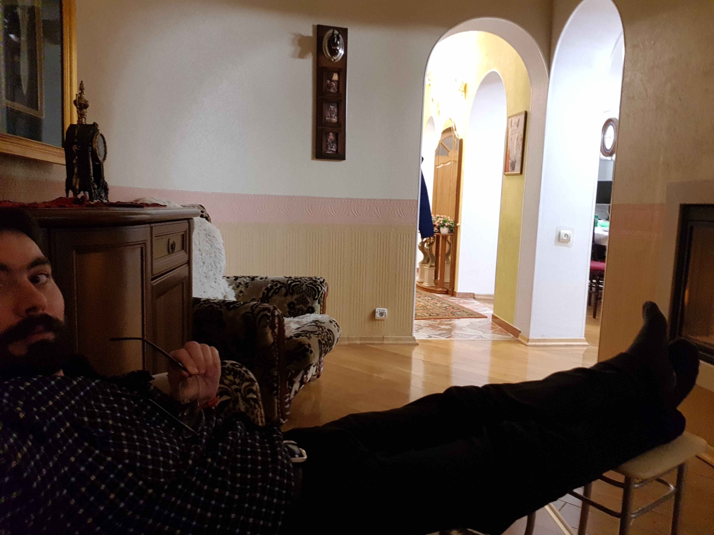

Добро Пожаловать на мой тестовый экспериментальный персональный web-сайт!
Всем привет! Это первый текстовый пост на моём авторском персональном статичном web-сайте, прошу любить и жаловать!
Posted by Folombas Web on October 10, 2024
Всем привет, всем Здравствуйте, уважаемые пользователи Всемирной Сети Интернет! Разрешите представиться, меня зовут Александр. Добро Пожаловать на мой авторский персональный тестовый экспериментальный web-сайт!
Это персональный статичный тестовый web-сайт я создал с целью, чтобы рассказывать уважаемым читателям своего персонального Интернет-Блога о моих успехах в Программировании.
Этот данный свой персональный web-сайт я разместил на бесплатном хостинге на платфоре GitHub Pages.
Мне очень нравится в свободное время изучать Программирование. Программирование - это моё хобби и увлечение. А у вас есть в вашей жизни какие-нибудь хобби и увлечения?
Ещё мне очень нравится гулять пешком. Я люблю совершать длительные пешие прогулки по красивым местам на свежем воздухе. Работа Программиста - это, да, в большинстве случаев сидячая работа на одном месте, это так и есть, даже не спорю. Не подвижный образ жизни, гиподинамия - это болезнь айтишников, которые долгими часами сидят перед компьютером без движения. Поэтому нам айтишникам и программистам просто необходимо как можно больше двигаться. Не зря гласит народная русская мудрость, что движение - это жизнь! Так что, больше двигайтесь, Господа Айтишники и Программисты!
Да, это весьма сложный вопрос, даже не спорю. Даже больше скажу, можно годами прыгать и скакать с одного направления на другое. Можно бесконечно перескакивать с одного языка программирования на другой. Это не смешно, так делают многие начинающие айти-специалисты, которые не могут остановиться и сфокусироваться на какой-то определённой, так скажем, айти-сфере.
Вообще, если Вам, конечно, интересно моё личное субъективное мнение, то я хочу Вам посоветовать особо так не распыляться по разным айти-сегментам, а выбрать и сфокусироваться на какой-нибудь отдельно взятом айти-направлении ну как минимум хотя бы на полтора годика.
Ну а потом, в принципе, при желании можно перейти на какую-нибудь другую айтишную направленность, если какая-то определённая ниша Вам уже очень сильно поднадоела. Да, и такое бывает, что всё приедается и не вызывает такого же удовольствия, как на первых парах, скажу я так Вам.
Здесь в своём блоге я с большим удовольствием буду делиться с вами, дорогие мои читатели, своими успехами в самостоятельном обучении Программированию. Да, я сам для себя решил, что не буду поступать на какие-либо платные айти-курсы. И я достаточно ясно для себя понял такую вещь, что Программированию вполне даже реально обучиться самостоятельно по открытым источникам из Интернета. Нужно только не лениться, не прокрастинировать и стараться заниматься каждый день. А на сэкономленные денежки можно купить себе вкусняшек!
Да, многие скажут, какой смысл сейчас, когда на дворе к концу уже подходит 2024 год выбирать для изучения Web-Программирование и Web-разработку, если везде все ходят со своими смартфонами?
Это тоже верно, смартфон у нас в кармане, смартфон с нами весь день. Людям легче скачать мобильное приложение, чем заходить в мобильный web-браузер, набирать там название нужного сайта.
Да, на сайт Wildberries можно зайти и с мобильного Интернет-браузера. Но кто так делает?
Обычно люди пользуются мобильными приложениями Wildberries, Ozon, Яндекс.Еда и так далее.
Значит, лучше изучать мобильную разработку?
В принципе, разработка мобильных приложения - это тоже весьма интересная и востребованная айти-сфера.
Но я вся таки решил пока что остановится и сфокусироваться на web-разработке. Почему?
Это хороший вопрос, попробую ответить.
Это, наверное, потому, что моё первое знакомство в Интернетом началось в начале 2000-ых годов не с мобильных телефончиков, с а полноценного домашнего персонального компьютера.
Компьютеры - любовь на всю жизнь!

Это я здесь на фото отдыхаю у камина в своём собственном роскошном особняке после IT-самообучения.
Да, я тот мамонт-миллениал, который не тапал Хомяка в школе на переменах. Зато после школы в старших классах я шёл домой и играл в самый настоящий домашний персональный компьютер.
Прикиньте, в школе мобильного телефона у меня не было. Зато помню, как родители с работы принесли какой-то списанный старый компьютер MS-DOS`e c игрой Pac-Man.
Потом чуть погодя этот древний компьютер заменили на более-менее современный по тем временам белоснежный персональный компьютер марки Formoza с монитором на электронно-лучевой трубке.
То есть, вот эти все web-сайты на экране ЭЛТ-монитора для меня ближе и роднее, чем телефончики с мобильными приложениями.
Вот, скорее всего, оттуда и растут моей любви к web-программированию, даже так можно сказать, обобщая.
Так что, я не просто так с бухты барахты решил взять и заняться в своём зрелом возрасте изучением такой тоже весьма интересной айти-темы как Web-Программирование.
Думаю, что у меня обязательно всё получится и меня будет ждать ошеломляющий успех в самообучении Программированию!
Главное, не расстраиваться об упущенных возможностях, не горевать о прожитых впустую годах, а собраться с духом, начать самообучаться, развиваться и с жизнерадостным позитивом смотреть вперёд!